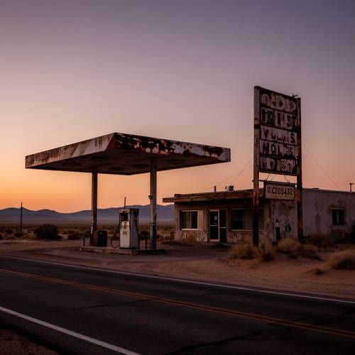
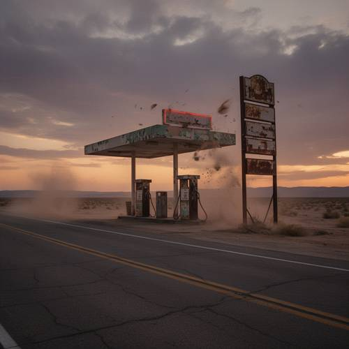
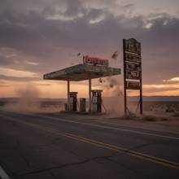
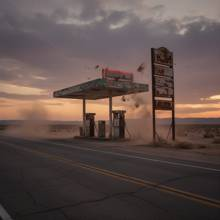

Style — At dusk, an abandoned gas station stands alone beside the desert road.
At dusk, an abandoned gas station stands alone beside the desert road. The wind and sand blowing against the rusty signs, presenting the bleak style of a road movie.

Direct — one call, no iteration

Continuum — Qwen3.8-27B + FLUX.2-dev
Judge — Direct
PASSStyle — The image shows a desolate, abandoned gas station next to a road in a desert landscape during dusk. The lighting is low, the colors are muted, and the structures are rusty and decaying. This combination of isolation, decay, and the specific time of day creates a bleak, lonely atmosphere commonly associated with the aesthetic of a road movie.
FAILAction - State — The image is a static photograph. While the scene is set in a desert with sand, there are no visual cues to suggest that wind is blowing or that sand is being blown through the air. The atmosphere appears calm and still.
Judge — Continuum
PASSStyle — The image features a dilapidated gas station in an empty desert landscape next to a cracked asphalt road. The lighting is low, corresponding to dusk, with a muted and desaturated color palette. This combination of an isolated, decaying man-made structure in a vast natural setting under dim light creates a desolate and lonely atmosphere, which is characteristic of the bleak style often seen in road movies.
PASSAction - State — The image visually represents wind and blowing sand. There are visible plumes of dust and sand swirling around the base of the gas station's pillars and the large signpost. Additionally, small particles and debris are captured in mid-air around the structure, indicating strong air movement.
What the agent did
Thinking
Let's generate this image: an abandoned gas station at dusk, a desert road, rusted signs being battered by wind and sand, a bleak road-movie atmosphere. First, let's generate with a detailed prompt that adds visual detail without adding non-visual backstory.
Step 1 — `generate_image`
{
"model": "flux2-dev",
"prompt": "Cinematic wide shot at dusk of an abandoned gas station standing alone beside a straight two-lane desert highway, vast empty desert stretching to the horizon, cracked asphalt, faded peeling station canopy with a dead neon sign, rusty corroded metal fuel pumps with dangling nozzles, tall rusty metal signs with faded paint flaking off being battered by wind blowing fine sand and dust across the scene, drifting dust haze in the low sunset light, warm orange and dusty purple twilight sky with heavy clouds, long shadows, desaturated muted tones, bleak desolate mood, grainy film still from a road movie, dramatic raking light, photorealistic, cinematic color grading",
"width": 1600,
"height": 900
}
Result img_0

Thinking
The image is good — a dusk desert gas station, a rusted sign, sand being blown by the wind. Let me check the details: the canopy sign looks like garbled text ("OILE..."), but that's fine for an abandoned station — the faded/illegible text actually adds to the derelict feel. Actually, let me zoom in to check for any glaring issues. The image is pretty well done: a cracked road, a desert, a dusk sky, a rusted vertical sign, and a plume of sand blowing around the pumps. The neon sign has some red letters. For an abandoned station, the garbled text is within the acceptable range and even adds to the atmosphere. But let me zoom in to check the quality.
The canopy sign displays garbled text, something like "OIE T EAU" — it's illegible. For an abandoned gas station, a faded sign would be more convincing. The garbled text looks like an AI artifact. I could leave it as is (it reads as an old faded sign, which suits the theme of abandonment), or I could edit it to a faded illegible mark. Honestly, the garbled letters are a typical AI text artifact. In a bleak road-movie still, a faded unreadable sign would be more convincing. Let me try an edit to fade the letters into worn-out illegible marks. Actually, looking at the crop again: the sign reads "OIE T EAU" with a red neon border. It does look like a worn-out sign, and the legibility is low enough that it could pass as "an old faded sign." But in close-up, the letters are clearly wrong/garbled. The prompt didn't ask for specific text, so the goal is a plausible, worn-out sign. I'll go ahead and edit it to make the lettering more faded and worn away. First let me mark img_0 as the best (it's a decent result), then try the edit.
Model
The composition is working well — the dusk, the rusted signs, the sand storm. One flaw: the text on the canopy sign is garbled (it's the "OIE T EAU" kind of thing), and it's clearly readable as an artifact. I'll mark this as the current best, and then make the sign's lettering look worn off and faded, so it reads as an aged, abandoned sign rather than broken text.
{
"image": "img_0",
"model": "flux2-dev",
"prompt": "Replace the lettering on the red neon gas station sign with worn, faded, illegible lettering \u2014 the letters are mostly worn away and flaking, only ghostly traces of paint remain, no readable words, weathered aged look matching the rusty abandoned sign"
}
Result img_2

Thinking
The edit went well — the sign is now faded and illegible, which looks far more convincing as an abandoned station. I'll zoom in and check.
Model
The edit worked well — the lettering is now worn and illegible. Let me verify the sign up close and check the rest of the scene didn't drift.
The sign is now faded and weathered, with ghostly traces of the red neon frame remaining — exactly the abandoned look I was going for. The rest of the scene is preserved: dusk sky, cracked road, rusted vertical sign, sandstorm swirling around the pumps. Everything the prompt was asking for is in place: - Dusk ✓ (warm orange horizon, heavy clouds) - Abandoned gas station standing alone ✓ - Beside a desert road ✓ (cracked two-lane highway with double yellow lines) - Wind and sand blowing against a rusted sign ✓ (sandstorm visible near the pumps and the sign) - Desolate road-movie style ✓ (cinematic widescreen, filmic color grade) img_2 is better than img_0. I'll mark img_2 as the best and stop here — good enough as a stopping condition.
Model
The sign has now become a faded, weathered-looking sign with a ghostly red neon frame — it looks authentically abandoned, and the rest of the scene (the dusk sky, the cracked road, the rusted vertical sign, the sand swirling around the pump) is completely intact. All the elements of the prompt are in place.
Step 6 — `mark_best`
{
"image": "img_2",
"reason": "Final fix applied: canopy sign lettering is now worn and illegible instead of garbled; all prompt elements (dusk, lone abandoned desert gas station, rusty signs, wind-blown sand, bleak road-movie look) present and intact."
}
Thinking
The run is complete. The marked image is img_2, which is my latest and best version. Let me summarize.
Model
Done. The final image is marked (img_2) and matches the brief: - **Dusk atmosphere** — a heavy, overcast twilight sky fading to burnt orange at the horizon, long shadows, low raking light - **Abandoned gas station** — cracked teal canopy, corroded pumps with sagging nozzles, faded sign with only ghostly traces of lettering left - **Desert road** — cracked two-lane highway with double yellow lines running empty into the flat desert horizon - **Wind and sand** — visible dust haze and swirling sand pummeling the rusty signs and pumps - **Bleak road-movie style** — muted desaturated palette, cinematic wide framing, filmic grain and grading I made one targeted edit to replace the first version's garbled sign text with properly worn-away, illegible lettering, which made the station read as genuinely long-abandoned.